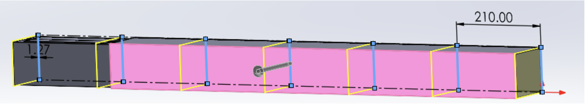
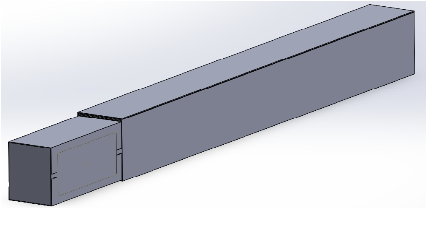
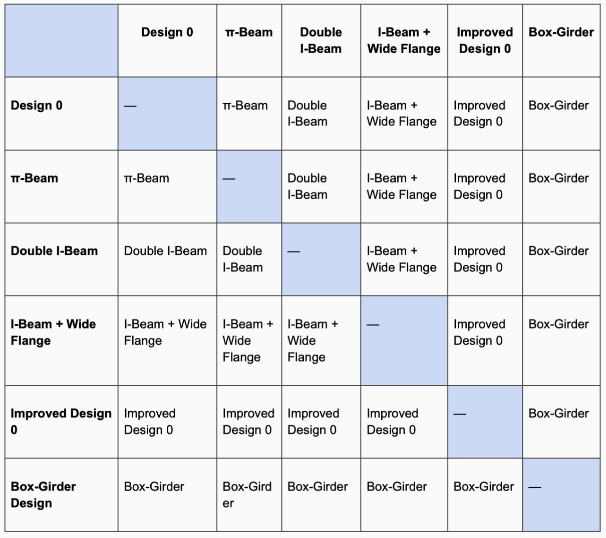
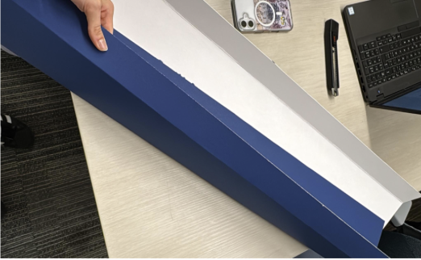
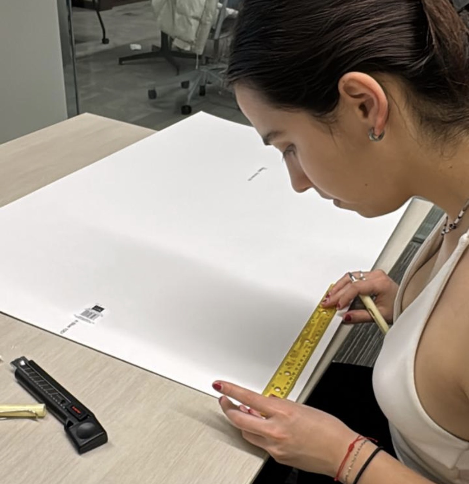
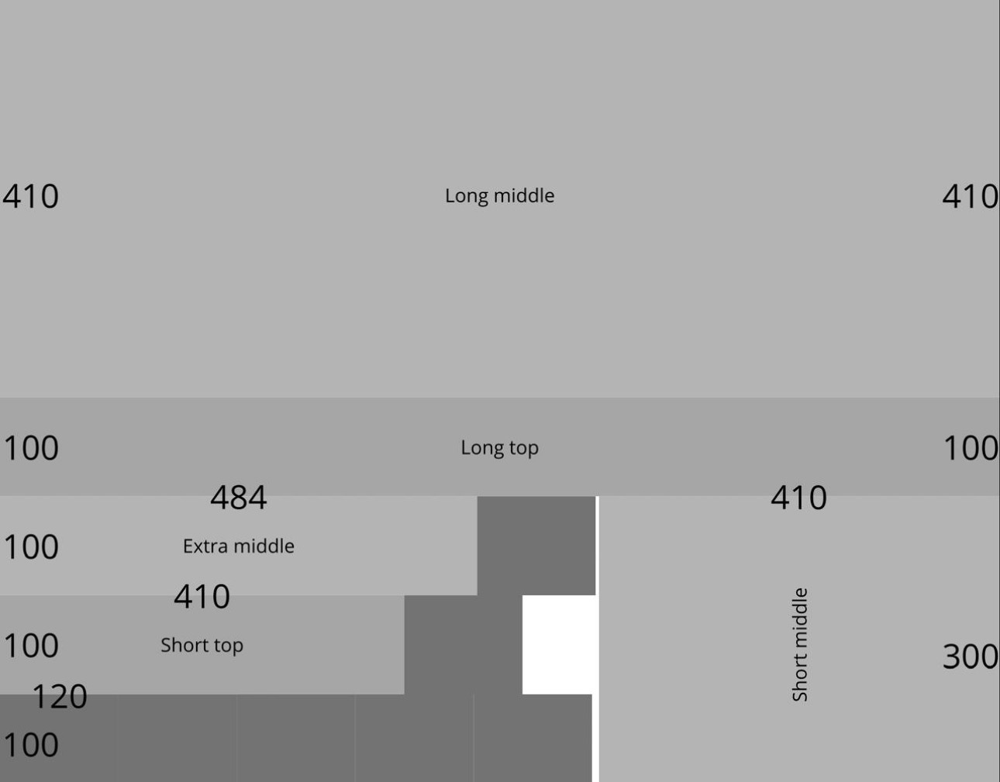

Represent
CAD Modelling
CAD modelling is the use of computer-aided design software
to create digital representations of a system, allowing
designers to visualize geometry, test fit, and evaluate
design decisions before physical construction. It allows designers to
make more accurate representations and modify them easily to improve design quality [4].

Fig. 6: CAD model showing segmented bridge geometry [10].

Fig. 7: CAD model of the full bridge form [10].
CAD modelling was used to develop and refine the geometry of
the bridge before the actual construction. By creating a digital model,
we were able to visualize the final cross-sectional design of the box-girder configuration, and ensure that all
components were properly aligned and within the given
dimensional constraints. This was crucial as it helped guide decisions related
to proportions and material distribution, since we were limited on those, so we had to carefully consider the overall
structural layout. Additionally, CAD allowed us to identify
potential issues, such as misalignment or inefficient use of
material, before building the physical model. This was a really important proccess, as
we only had one chance at building it, so it had to be perfect. However, while
CAD modelling provided a clear and precise representation of
the design, it did not account for real-world factors such
as fabrication inaccuracies or small human errors, for instance in measuring or cutting. As a
result, the physical bridge did not fully match the
idealized model. This showed me that CAD is a powerful tool
for visualizing and planning designs, but must be
complemented with testing and practical considerations to
ensure real-world performance.
Fig. 6 demonstrates the CAD model that was used to visualize the splice region between
two sections of the bridge. By digitally representing how the components fit together, Fig. 7,
the model allowed us to clearly understand how the overlapping layers would interact
and how the load would be transferred across the joint. Through this representation,
we identified a critical issue in the design, a small portion of the outer
layer did not fully wrap around the structure at the splice.
This gap highlighted a potential weakness in the connection,
as incomplete wrapping could reduce structural continuity and compromise the
strength of the joint. This allowed us to take that into consideration and plan accordingly. This
shows why making a CAD model is very useful and benefits the end results.
Converge
Pairwise Comparison
Pairwise comparison is a converging tool used to
systematically evaluate design options by comparing them two
at a time against defined criteria, allowing for a
structured ranking and selection of the strongest concept. Compare each design in a row to a different design
in a column, and at the end the design with the most wins is the strongest design [5].

Fig. 8: Pairwise Comparison Matrix to evaluate the best
design [10].
In this project, pairwise comparison was used to guide the
selection of the final bridge design by evaluating multiple
cross-sectional configurations, including the pi-beam,
double I-beam, I-beam with wide flange, and iterative
improvements of these concepts. Each design was compared
directly against another based on criteria such as
stiffness, resistance to buckling, material efficiency, and
constructability. Through this process, we were able to
identify which designs consistently outperformed others
across key structural requirements.
The pairwise comparison results are summarized in Fig. 8.
The table shows the outcome of direct comparisons between
each design, where each entry indicates the stronger option
based on the selected criteria.The results demonstrate that open-section designs, while
simpler and using less material, were more susceptible to
buckling and provided lower overall stiffness. In contrast,
the box-girder configuration consistently outperformed
other designs across the majority of comparisons due to its
ability to resist both bending and torsion more
effectively. As a result, it emerged as the strongest
overall design. This figure illustrates how pairwise
comparison enabled a systematic and evidence-based
narrowing of design options, ensuring that the final
selection was based on consistent evaluation rather than
subjective preference.
This process demonstrated that pairwise comparison is an
effective method for making informed design decisions under
multiple competing criteria. It also highlighted that
selecting a final concept is not about optimizing a single
factor, but about identifying the design that provides the
best overall balance of performance, efficiency, and
reliability.
Converge
Verification Methods and Planning
Verification methods and planning involve defining how
design requirements will be tested and validated, and
proactively developing strategies to ensure that a design
can be successfully constructed and perform as intended [6].

Fig. 9: Practice matboard [10]

Fig 10: Practicing the layout on the practice matboard [10]

Fig. 11: Planned cutting pattern to practice on the
practice matboard [10].
In this project, verification and planning were used to
ensure that the bridge design was not only theoretically
sound, but also feasible to construct with the given
materials. Prior to building the final bridge, we practiced
fabrication techniques on spare matboard, as seen in Fig. 9
and Fig. 10, to evaluate how the material behaved during
cutting, folding, and bonding.
Through this process, we identified key improvements to our
construction methods. For example, lightly scoring the fold
line using the non-sharp side of an X-Acto knife allowed
for cleaner and more controlled bends without cutting
through the material, resulting in sharper corners and more
accurate geometry. Additionally, scoring the surface before
applying cement increased surface roughness, improving
adhesive bonding and strengthening joints.
These verification steps revealed that fabrication precision
had a significant impact on structural performance. As a
result, we refined our construction approach to improve
consistency and reliability in the final build.
Fig. 11 shows the planned cutting and folding pattern
developed during preliminary practice on spare matboard. The
layout outlines how the bridge components would be cut and
folded from a single sheet to form the desired
cross-sectional geometry. By mapping out fold lines, cut
locations, and dimensions in advance, we were able to plan
how to efficiently use the limited material while
maintaining structural accuracy. This plan was created and
tested prior to final construction as part of the
verification process. Practicing this layout allowed us to
evaluate how the matboard responded to cutting and folding,
and to refine techniques such as scoring fold lines for
improved precision. It also helped identify potential
issues, such as misalignment or material waste, before
working with the final sheet.
This experience demonstrated that verification is not
limited to final testing, but must be integrated early
through planning and material experimentation. By validating
construction methods in advance, we were able to reduce
uncertainty and better align theoretical design decisions
with real-world execution.